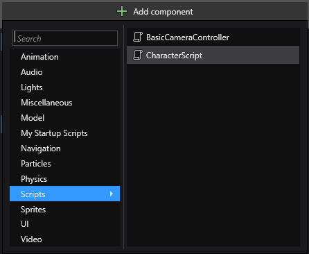

Use a script
Beginner Programmer
To use a script, add it to an entity as a component. You can do this in Game Studio or in code. Stride runs scripts when the entity they are attached to loads.
You can add a single script to as many entities as you need. You can also add multiple scripts to single entities; in this case, Stride creates multiple instances of the script. This means the same script can have different values in its public properties and fields.
Add a script in Game Studio
There are three ways to add scripts to entities in Game Studio:
- drag the script from the asset view to the entity tree
- drag the script from the asset view to the entity properties
- add the script in the property grid
Drag to the entity tree
This method automatically creates a new entity that contains the script.
In the solution explorer (in the bottom left by default), select the assembly that contains your script. Game Studio shows your script in the asset view.

Drag the script from the asset view to the entity tree.
Game Studio adds an entity to your scene, with the script as a component on the entity.

Drag to the property grid
In the entity tree (on the left by default), or in the scene, select the entity you want to add the script to.
In the solution explorer (in the bottom left by default), select the assembly that contains your script. Game Studio shows your script in the asset view.
Drag the script from the asset view to the property grid.
Game Studio adds the script to the entity.
Add the script in the property grid
In the scene editor, select the entity you want to add the script to.

In the property grid (on the right by default), click Add component and select the script you want to add.

Game Studio adds the script to the entity.
Note
You can customize where scripts appear in the dropdown using the ComponentCategoryAttribute:
[ComponentCategory("My Startup Scripts")]
public class SampleStartupScript : StartupScript
{
public override void Start()
{
// Do some stuff during initialization
}
}
Add a script from code
The code below adds a script to an entity.
// myEntity is an existing entity in the scene; myAsyncScript is the script you want to add to the entity
myEntity.Add(new myAsyncScript());